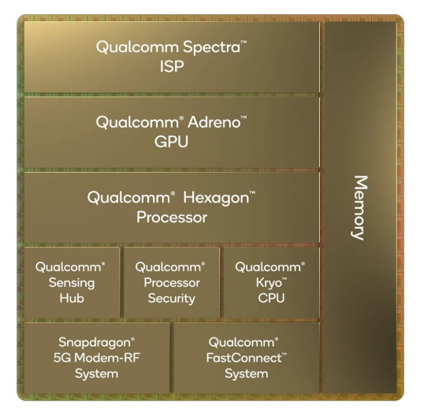
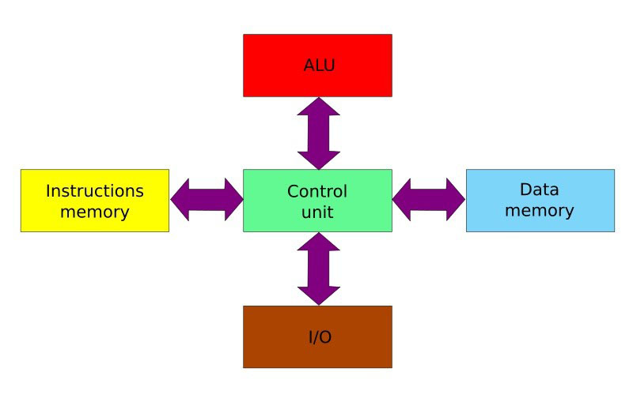
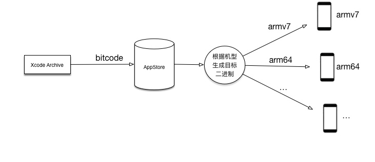
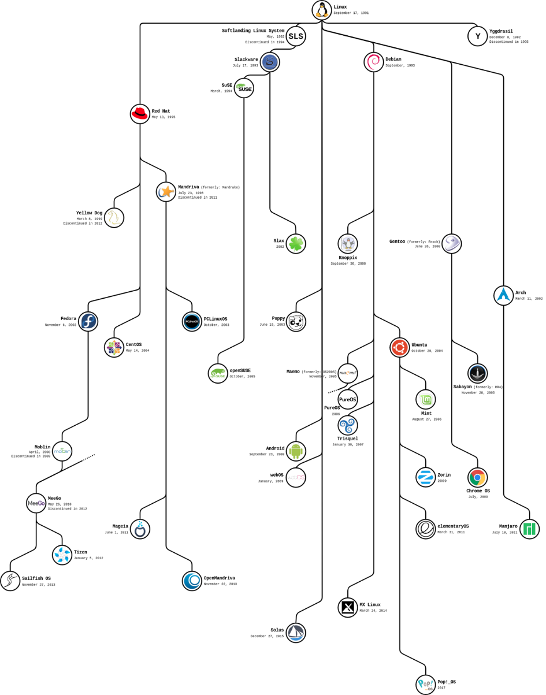

1 引言
2020年11月11日，产生了一款划时代的产品，M1芯片从此进入了MacBook，结束了英特尔对MacBook的控制，次年4月21日，苹果春季发布会中首次公布了M1版本的iPad Pro，苹果在给移动端增加性能的同时不禁引起全世界人的深思，众所周知，iPad OS为iOS分支，而MacBook所用的Mac OS为苹果的桌面级系统，两者似乎并无联系，却使用了同一款arm架构的CPU，乃至有人构思在iPad上使用Mac OS的可行性。
无独有偶，哔哩哔哩平台著名视频UP主极客湾Geekerwan于2021年7月6日发布了他在一加6T手机上运行Windows11系统的视频，借助了Windows on arm系统，搭载骁龙850（arm架构）笔记本现有的驱动程序及特制的UEFI（将UEFI伪装成Linux内核，Renegade项目）引导手机运行Windows系统，参考图1所述。
图1 安卓和Windows设备启动过程区别
综上所述，桌面系统未必需要x86 芯片，且arm芯片也并非只适用于移动系统，两者之间或许存在联系。
2 失败的尝试
2.1 无奈的性能
基于arm的安卓系统和基于x86的Windows系统都已经相对完善了，而目前新建系统的成本过高，因此Windows on arm或者安卓 x86都是采用仿真的方法来缓解匮乏的软件生态问题，代价便是性能的降低，企业也难以从中获得利益，消费者也不会接受性能落后的设备，其中以2017年arm体系的高通骁龙835为例，如图，骁龙835作为arm体系的高端芯片，借助仿真，却远不如当代的x86 CPU，甚至不如低端赛扬N3450。
表1 Futuremark PCMark 8分数对比（越高越好）
表2 Adobe Photoshop（越低越好）
表3 Google Octane 2.0（越高越好）
表4 Cinebench R11.5（越高越好）
表5 Battery Life:Wi-Fi Web Browsing（越高越好）
通过对这五张表的分析，不难发现，骁龙835平台仅在续航上领先，性能却落后了几倍，并且图中骁龙835运行Edge跟Chrome相对，有三倍只差，只源于Chrome为仿真运行，而Edge为微软为其编制的原生arm浏览器，这进一步说明了仿真运行性能损耗大，因此，对于消费者而言，无论价格还是性能，都会优先选择x86平台。安卓端也是如此，作为国内首款x86手机：联想K800手机，其处理器为Atom Z2460，作为一款单核x86芯片，其性能超过大部分低主频的双核arm A9，甚至可以与高主频的双核A9相较量，并且在x86原生库中获得了平均45.9FPS的成绩，但通过二进制转换执行arm库只有31.2FPS，高达30%的差距使得x86在安卓中效率低下，并且带来了更高的功耗，使得搭载x86的机型大多续航弱，消费者更难以接受这样的产品，因此在厂家尚未完全适配Windows on arm和安卓 x86前，市场还是难以被撼动。
2.2 英特尔的误判
了解Intel的人不难发现，这家巨大x86芯片制作企业在2006年前曾拥有最强的移动处理器，只是当时手机市场尚不发达，安卓和iOS并未占据市场，当年还是Windows Mobile和塞班两分天下，手机处于不如电脑的时代，Intel由此放弃了利润低下的手机市场，不曾想苹果和谷歌迅速占据市场，自2008年安卓兴起，arm芯片进入了并占据了手机行业，由此生态也基于arm开发，而与此同时，Intel在Atom上大做文章，但是性能羸弱，功耗大的Atom远不如arm在手机端的能力，Intel或许也未曾预料到仅仅几年，arm便已经占领市场，待Intel回归之时，Windows Mobile已无力回天，安卓 x86的执行效率迫使Intel放弃手机市场，转而大量投入平板，奈何arm发展迅速，加之平板行业暂未拥有良好市场，并且苹果A系的性能已领先Intel，除去性能损耗，Intel甚至难敌高通，最终导致了Intel的放弃，而2020年，苹果在iPhone 12上使用了高通基带，放弃了使用多年的Intel基带，使Intel彻底放弃手机市场。当然，Intel并非专职于手机，而是专职于x86 CPU的研制，从“英特尔-摩托罗拉之战”便可看出，英特尔就是在一条路上坚持走到底，成就了它在x86芯片的地位，摩托罗拉也因此在多个领域受挫，加之内部的老旧，导致这个曾经的“霸主”丧失原有的地位。英特尔从开始便坚持走复杂指令的道路，因为它抓住了市场对兼容性的高需求，并且六分天下的精简指令早已经市场饱和，逆世界潮流而行却使这家企业获得了唯一的生存机会并至今保留活力，有人把PC行业称为英特尔-微软体系（WinTer），也是进一步说明了x86对Windows的高适配性，也决定了Windows不同于需要续航和精简的安卓，高性能的复杂指令才是它最好的选择。
2.3 令人担忧的生态
Windows on arm的应用生态令人堪忧，上述已经分析了x86原生和arm仿真下的性能，现在来看下在各平台下的性能对比，如表6。
| 平台 |
芯片 |
单核性能 |
多核性能 |
| Surface Pro X(ARM) |
SQ1 |
3505 |
11727 |
| Surface Pro X(x86) |
SQ1 |
2182 |
6822 |
表6 Surface Pro X在arm和x86平台性能对比
本数据与上述数据对比，显然，arm芯片在arm平台上才能发挥它的最大性能，而Surface Pro X作为微软的高端产品，优化自然不会掉以轻心，但仍然拉出来不少的差距，可见作为国际一线大厂也难以让Windows on arm的生态完全改善，更何况一众打着双系统口号的笔记本电脑厂商，恐怕也难以应对生态的弊端。回望2014年，Windows RT 8.1正式发布，作为Windows on arm的开端，它却不支持虚拟化和仿真，这无疑是生态最为堪忧的一代，乃至今日，Windows on arm仍不能运行64位的应用程序，微软商店匮乏的应用使人们放弃RT 8.1，adobe等应用的缺失也使它仅专职于办公人士。
3 成功的喜悦
3.1 惊人的续航
Windows on arm可以带来超长的续航，以surface pro x为例，它达到了惊人的13小时，这是低压x86的笔记本难以达到的水平，借助arm的精简指令集，arm电脑总能在轻薄的基础中展示出更持久的续航，借助微软对office的优化，使用于办公的arm电脑能保持续航和性能的同时稳定，这对于办公人士无疑是友好的，并且除了Windows on arm，还有大量Linux发行版，甚至基于Linux的原生安卓,这些操作系统能使arm笔记本获得更多的生态，尽管这样变更了arm笔记本的最初设计理念，但是伴随各大发行版Linux，尤其是那些偏向于利用安卓生态的系统，在安卓平板高速发展的今天，各个HD版本应用浮出水面，配合开发者对应用和系统窗口化的设定，使其获得不亚于Windows on arm的体验，尽管今日尚未有哪台arm笔记本出产即带基于Linux的操作系统，但各个系统开发者早已使之成为现实。
3.2 随心的互联
Windows on arm可以让arm笔记本连接类似手机的LTE高速网络，自带的sim卡槽或利用e-sim，实现笔记本的随时随地联网，告别了随时找WLAN和手机开热点的问题，这为办公人士提供了极大的便利。至此，我们更应讨论arm和x86的本质区别。

图2 骁龙8gen1内部图

图3 各部分硬件间的协调
由图2，3可知，以最新一代的骁龙8gen1为例，arm芯片通常带有modem-rf（调制解调器），而这正是连接LTE网络所必需的，这张图也说明了arm芯片集成了memory和GPU，进一步证明了arm芯片的精简，高效和低能耗，因此，arm与x86本身并无对比的必要，重点在于需求。
3.3 Arm的发展
arm芯片性能增长速度快，Windows on arm作为一个新兴的尝试，便能获得不小的成绩，而且arm芯片的应用场景在不断扩大，高能耗比，发热极小，速度极快的arm芯片越来越多的应用于台式机和工作站，也是源于移动端兴起，进而推动arm芯片性能的高速发展，而Windows又是专业领域不可或缺的重要系统，对于office，adobe等专业软件，Windows的生态有目共睹，得益于微软数十年的调教和开发者的努力，Windows的生态早已成为Windows的命脉，Linux发行版的没落大多源于生态的匮乏，并且各个软件开发者大量投入Linux软件的设计并不能带来巨大的收益，见证了arm和Windows在各自领域的优越性，或许arm配合Win才是优选，伴随市场的需求渐增，相信微软和高通的精诚合作一定能让Windows on arm做的更好。
4 优秀的另类
以上总结的Windows on arm的优缺点和可行性，这里不得不提一款令所有人为之感叹的企业——苹果公司。关注近些年苹果的动态便可知道，它似乎将Windows on arm的缺点完全解决，并且结合了其优点，话题回归最初的苹果m1芯片，m1应用于MacBook系列的一年也是苹果脱离x86芯片的一年，苹果将m1应用于自家几乎所有电脑产品，并为此适配了Mac OS Big Sur，使得MacBook能在Mac OS上正常使用iOS应用，尽管最新一代的Windows 11预览版也加入了安卓子系统的适配，但是利用x86，效率即使再高，本质仍是仿真和模拟，性能损失不可避免，但是基于arm架构的m1芯片却能在Mac OS和iOS上游刃有余，这得益于苹果对其的优化，也与Mac OS和iOS本质有关，最初的m1版的MacBook确实也存在过安全和生态的问题，2020年11月18日，腾讯安全玄武实验室对外公布了m1版的MacBook Air和MacBook Pro的安全漏洞，这对一向以安全著称的苹果来说是一次巨大的打击，同时大量软件的适配问题也出现在搭载m1芯片的电脑上，但这很快得到了解决，通过Mac OS Big Sur的发布会可知，苹果采用Universal 2 和 Rosetta 2来使Mac OS运行x86系统，虽然其本质仍是通过二进制转译来实现，但其并不同于Windows on arm，苹果的Universal 2引入了bitcode（源代码编译成二进制机器码中的中间码），其运行原理如图4。

图4 Apple Universal 2原理分析
Rosetta 2则是采用转译动态代码的方法，再加之苹果早期已经为iPad产品线准备了iPad OS，经过多年的发展，它获得了很多来自x86程序（Photoshop等）的改编，无形中已经为现在的Big Sur积累了大量应用生态，最为重要的是，Mac OS和iOS都是基于Darwin（基于Unix的苹果系统内核），它们基于同一系统，移植的难度远低于Windows和安卓的移植，这一切已经表明的苹果的高瞻远瞩和M1成功的必然。当然，生态可能仅仅是时间，Windows on arm兴起也有极大的可能性，但是直至目前，在arm笔记本电脑的发展之路上，苹果仍是时代的领路人，庞大的Windows，Linux系统体系在某些方面仍难以对和谐统一的Mac OS，iOS造成压力。
5 结论
直至今日，苹果公司基于Darwin已开发了Mac OS，iOS，watch OS和TV OS，分工明确，各自适用于各自的领域，但又不独立存在，借助闭源系统的优势，各系统在稳定的运行，互不干扰，并且源于同一系统，又出自同一家公司，没有外人的干预，它们之间组成了一个完整的生态体系，由于苹果对自己产品，尤其是MacBook的特殊定位，使其在桌面系统上发展arm芯片成为必然，并且其能力也足以使其完善。反观Windows和Linux阵营，仅Linux发行版便有300多个（如图5），而基于安卓系统（Linux内核）的各种UI设计（如MIUI，EMUI）又差距甚大。

图5 庞大的Linux系统体系
庞大的Windows，Linux系统体系在一定程度上满足了各方面的需求，但却拉开了各自的关系，延续体系发展看似满足了多数人的需求，实则弊端明显，在arm芯片盛行的今天，Windows on arm的需求持续提高，该体系却难以将x86系统与arm芯片有效结合，弊端产生，只能通过漫长的时间和无数开发者的用心来创造新的环境，但Windows on arm仅是市场需求的一个例子，未来需求仍是未知，Windows和Linux该如何发展也仍是未知。
因此，基于arm的桌面系统的发展是必然趋势，但仍要各个产商（尤其是微软和高通）的紧密协作，未来必将大放光彩。
参考文献
[1] 吴军.浪潮之巅[M].北京:人民邮电出版社,2019.
[2] Fredric Paul. Windows laptops running on ARM chips is a terrible idea[J]. Network World (Online),2017.
[3] Journal. DisARMed: Microsoft kills Windows RT, future ARM support doubtful[J]. ExtremeTech.com,2015.
[4] Journal. HP To Skip Windows 8 ARM Tablets[J]. Informationweek-Online,2012.
[5] Journal. Windows ARM Tablets: 8 Things To Know [J]. Informationweek,2012.